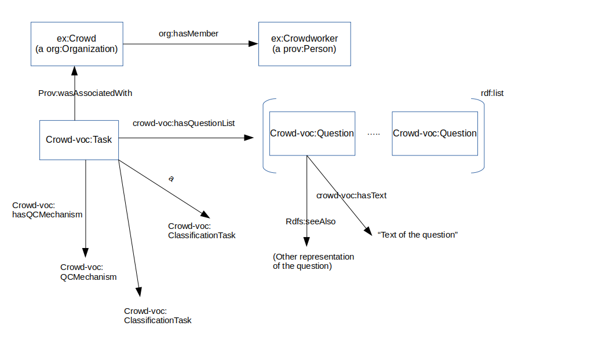
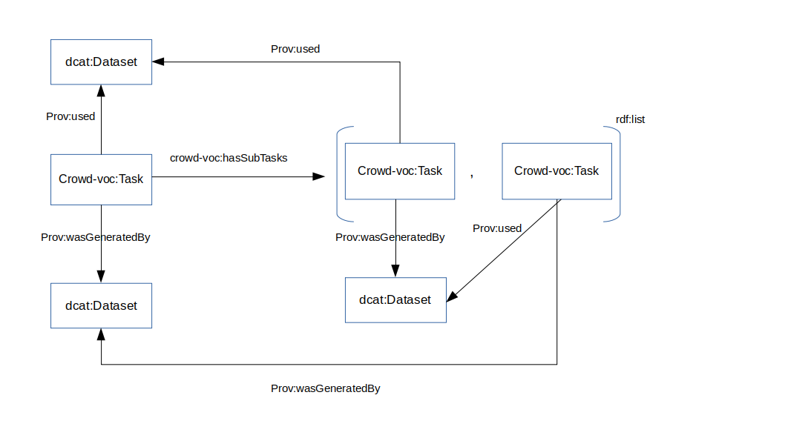

Crowd-Voc is a vocabulary for describing data that has been produced through crowdsourcing. Crowdsourcing is understood broadly, as any type of collective activity to solve a problem or achieve a goal. Data refers to the contributions of the crowd in their consolidated form, which are released in form of a 'dataset' which can be used in other contexts. The first goal of the vocabulary is to allow crowdsourcing projects to describe what the data is about and how it came about to facilitate reuse and sharing across projects. The vocabulary should also help repeat and reproduce research that involves crowdsourcing by capturing the key design parameters of a crowdsourcing task and the way crowd answers have been validated, aggregated and otherwise processed before their release as a dataset. Finally, the vocabulary sets the ground for acknowledging contributions by the crowd, towards a fairer model for licensing crowdsourced data.
This is version 0.1
| crowd-voc | <http://qrowd-project.eu/def/crowd-voc#> |
| owl | <http://www.w3.org/2002/07/owl#> |
| rdfs | <http://www.w3.org/2000/01/rdf-schema#> |
| xsd | <http://www.w3.org/2001/XMLSchema#> |
| dcterms | <http://purl.org/dc/terms/#> |
| org | <http://www.w3.org/ns/org#> |
| s | <http://schema.org/> |
| skos | <http://www.w3.org/2004/02/skos/core#> |
| foaf | <http://xmlns.com/foaf/0.1/> |
| ex | <http://example.com/> |
The core of the vocabulary is shown in the figure below. We reuse as much as possible existing vocabularies. The main entity is Task, a prov:Activity that describes the crowdsourcing task, ultimately generating a dcat:Dataset. An instance of Task is linked to a Crowd, which is a subclass of prov:Agent. Crowds consists of instances of Crowdworker, a type of prov:Person. A crowdworker may be part of many crowds, assembled to run different tasks. To establish the link between crowds and crowdworkers, we reuse the Organization ontology, making Crowd an instance of vocab-org:Organization, allowing the usage of the vocab-org:hasMember property. Crowdworkers are identified by ids, depending on the platform where the crowdsourcing task is being run. The aim is not to store personal data about contributors, which is not accessible when running a crowdsourcing task, but to be able to distinguish between multiple contributors - this is needed when validating and aggregating the data submitted by the crowd. The crowd of a task refers to the set of contributors to the task rather than all users registered on the crowdsourcing platform.
A task is comprised by an rdf:list of Questions that models the order on which questions are asked to crowdworkers. Each question has a hasText property, and a seeAlso that links to a more complex representation of the question, if available.

ex:aTask
a prov:Activity;
a crowd-voc:Task;
dcterms:description "My Crowdsourcing task"
prov:wasAssociatedWith ex:Crowd .
crowd-voc:hasQuestion (ex:question1,ex:question2)
ex:Crowd
a org:Organization
org:hasMember ex:a_crowdworker
ex:a_crowdworker
a prov:Person
ex:question1
a crowd-voc:Question;
crowd-voc:hasText "Cars in images"
ex:question2
a crowd-voc:Question;
crowd-voc:hasText "Cars at traffic lights in images"
ex:aCrowd
a crowd-voc:Crowd;
a prov:Agent;
vocab-org:hasMember ex:Crowdworker;
ex:Crowdworker
a prov:Person;
ex:generatedDataset
a dcat:dataset;
dcterms:title "Dataset generated by the task";
prov:wasGeneratedBy ex:aTask .
A task is a collection of different activities that ultimatelly results in a dataset. It can consist of subtasks of the same or different types. Our aim is to describe the design of the crowdsourcing effort, including standard classes of tasks, which are approached in a particular way in crowdsourcing (e.g., classification, sentiment analysis, transcription, review etc.) and activities the crowd was asked to carry out (e.g. answer questions, check a website, translate from one language to another etc.). The reader is provided with a broad overview of the workflow used, rather than a fully specified data or control flow, as in a workflow language. Each task (and all its subtasks) is linked to an input dataset (e.g. a collection of images) and an output dataset, which the crowd has helped produce. The output dataset is a consolidated version of the answers provided by the crowd, including validation, aggregation etc. A task can contain several questions, which refer to the exact wording used to seek contributions (e.g. "Identify all people, places, and organisations in the following paragraph"). In the example below, the task is comprised by two subtasks, a ClassificationTask and a SentimentAnalysisTask, each with one question. The below figure describes the subdivision of a task in subtasks, to model more complex situations on which different tasks (possibly with different crowds) are applied. The subtask list is modeled as a rdf:list of Tasks. Each subtask takes as input the dataset generated by the previous task. The result of the last subtask is also the final output of the general task.

ex:aTask
a prov:Activity;
dcterms:hasPart ex:subTask1;
dcterms:hasPart ex:subTask2;
dcterms:description "My crowdsourcing task";
prov:wasAssociatedWith ex:aCrowd;
prov:used ex:InputDataset;
prov:generated ex:OutputDataset;
ex:subTask1
a prov:Activity;
dcterms:description "Brexit tweets";
a crowd-voc:ClassificationTask .
crowd-voc:hasAggregation ex:s1_aggregation
crowd-voc:hasQCMechanism ex:s1_qc
crowd-voc:hasQuestion ex:s1_q1
ex:subTask2
a prov:Activity;
dcterms:description "Sentiment analysis on tweets";
a crowd-voc:SentimentAnalysisTask .
crowd-voc:hasAggregation ex:s2_aggregation
crowd-voc:hasQCMechanism ex:s2_qc
crowd-voc:hasQuestion ex:s2_q1
ex:s1_aggregation
a crowd-voc:AggregationMethod
ex:s2_aggregation
a crowd-voc:AggregationMethod
ex:s1_qc
a crowd-voc:QCMechanism
ex:s2_qc
a crowd-voc:QCMechanism
ex:s1_q1
a crowd-voc:Question;
crowd_voc:question_text "Does the tweet mention Brexit?"
ex:s2_q1
a crowd-voc:Question;
crowd_voc:question_text "Is this a happy tweet?"
IRI: TaskIRI
A task where the crowdworkers are asked to check predefined properties of an item by carrying out specific checks or consulting external sources
IRI: TaskIRI
A generic classification task on text or other media
IRI: TaskIRI
A task of finding a set of predefined characteristics of an item, for instance the author or year of a book
IRI: TaskIRI
A generic task of transcription for different types of media
IRI: TaskIRI
A task ranking different items
IRI: TaskIRI
A task moderating content from other tasks
IRI: TaskIRI
A task producing new content, for instance free labels or descriptions for items, shortened versions of text, media etc.
IRI: TaskIRI
A sentiment analysis task on text or other media
IRI: TaskIRI
A SubTask that is part of CrowdSourcing Task, for example, an image labelling task might consists of one subTask about identifying a certain entity in the image, and another about cropping the image to center the
IRI: QuestionIRI
A question that is shown to the Crowdworker
IRI: QualityControlIRI
Quality control mechanism applied to a task: verifiable/control question, pre-screening/test question, honeypot(sample-based filtering), agreement-based/consensus, none
IRI:
IRI:
A subTask has a question IRI:
Motivation of the task. Possible values are: monetary rewards, fun, personal achievement, social belonging, social status, altruism. IRI:
Workflow of the task: Find-Fix-Verify, Iterative Improvement, Crowd-guided workflow, Threshold-based workflow, Sequential interdependent, Parallel IRI:
A crowdsourcing task